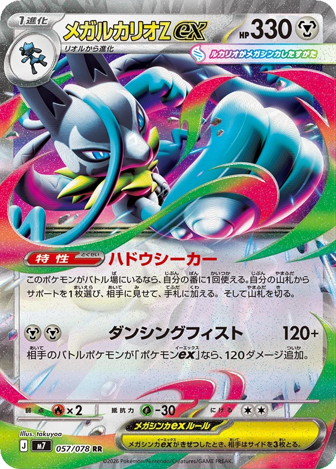
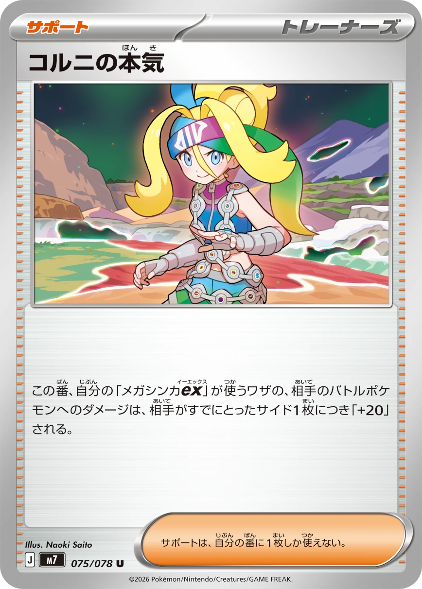
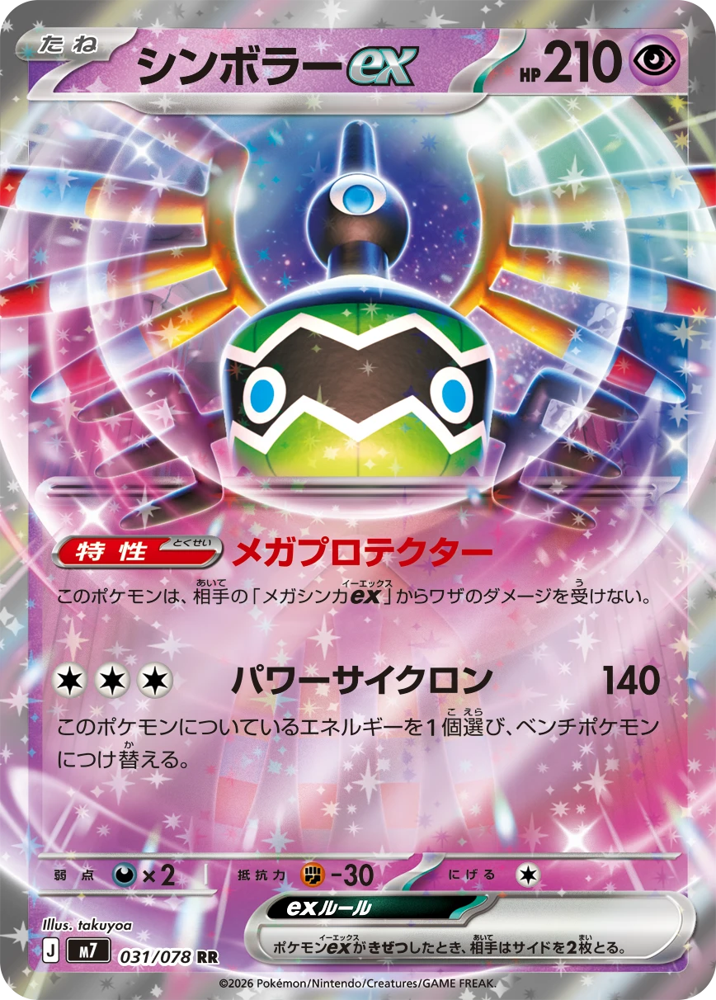
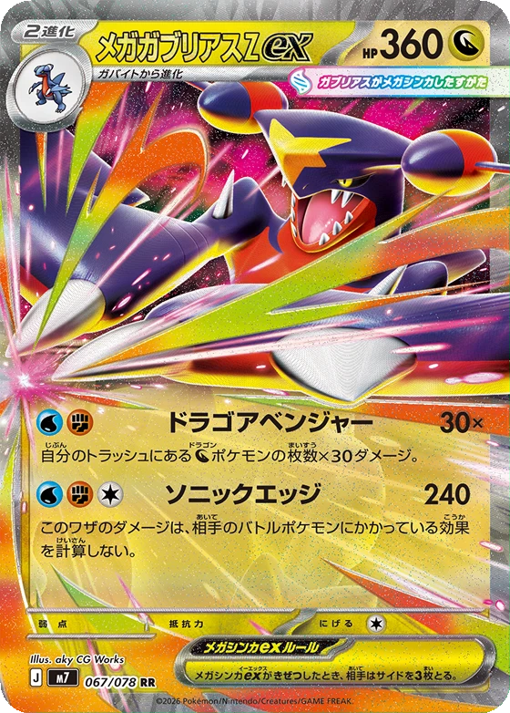

INDIGO META@indigo.meta
🇯🇵 Hadou Seeker · traduzione non ufficiale · fonte: pokemon-card.com
🇯🇵 Nuovo set · Hadou Seeker
240 danni
con 2 Energie
Mega Lucario Z ex: cosa fa, cosa mette KO
e come si batte.

La carta
Mega Lucario Z ex
330 PSFase 1Metallo
Abilità · dal Posto attivoUna volta a turno cerchi una carta Aiuto nel mazzo e la prendi in mano.
Attacco · 2 Energie Metallo120 danni, più altri 120 se l'attivo avversario è un Pokémon ex.
Cosa mette KO
240 danni contro i Pokémon ex più giocati oggi
Contro chi non è un Pokémon ex
fa solo 120: Slowking e Alakazam ringraziano.
L'Aiuto da cercare
Ornella fa sul serio

I tuoi Pokémon Mega ex fanno +20 danni all'attivo avversario per ogni Premio già preso dall'avversario.
Lucario la cerca da solo con l'abilità.
Con 5 Premi presi dall'avversario
340
danni a un Pokémon ex. Più sei indietro, più colpisce: Dragapult ex (320 PS) va KO da 4 Premi in su.
Come si batte
DebolezzaFuoco ×2: un attacco Fuoco da 170 lo mette KO.
Regola dei Mega exSe va KO l'avversario prende 3 carte Premio.
Il muro, nello stesso setSigilyph ex (Base, 210 PS) non subisce danni dagli attacchi dei Pokémon Mega ex avversari.

Ritirata da 2 Energie: bloccato nel Posto attivo,
non scappa gratis.
Lo giocheresti? 👇
In Giappone dal 27 novembre.
Data internazionale: non ancora annunciata.

Allenatori rivelati finora: 2 Aiuti e 1 Stadio.
Oggetti e Strumenti: ancora nessuno.
Circa 40 carte note su 78.
Nomi e testi: traduzione non ufficiale dal giapponese · Fonte: pokemon-card.com
PS dei Pokémon citati: carte ufficiali del formato Standard
Carte © Pokémon / Nintendo / Creatures / GAME FREAK